| Har kommunen svart? | Antall kommuner | Prosent |
|---|---|---|
| Ja | 36 | 83,7 |
| Nei | 7 | 16,3 |
KFF2026_vestland
Nasjonale resultater fra undersøkelsen
1 Datagrunnlag og svarstatus
Det inngår 43 kommuner i kommunefilen. Av disse har 36 svart og 7 ikke svart. Svarprosenten er 83,7 prosent.
| Kommunenummer | Svar |
|---|---|
| 4601 | Ja |
| 4602 | Ja |
| 4611 | Ja |
| 4612 | Ja |
| 4613 | Nei |
| 4614 | Nei |
| 4615 | Ja |
| 4616 | Ja |
| 4617 | Ja |
| 4618 | Nei |
| 4619 | Nei |
| 4620 | Ja |
| 4621 | Ja |
| 4622 | Ja |
| 4623 | Ja |
| 4624 | Ja |
| 4625 | Ja |
| 4626 | Ja |
| 4627 | Ja |
| 4628 | Ja |
| 4629 | Nei |
| 4630 | Ja |
| 4631 | Ja |
| 4632 | Ja |
| 4633 | Ja |
| 4634 | Ja |
| 4635 | Ja |
| 4636 | Ja |
| 4637 | Ja |
| 4638 | Ja |
| 4639 | Ja |
| 4640 | Ja |
| 4641 | Ja |
| 4642 | Nei |
| 4643 | Ja |
| 4644 | Ja |
| 4645 | Ja |
| 4646 | Ja |
| 4647 | Ja |
| 4648 | Nei |
| 4649 | Ja |
| 4650 | Ja |
| 4651 | Ja |
2 Resultater
Rapportfunksjonene er klare til bruk. Kommuner uten svar har svar = "Nei" og manglende verdier på SPSS-spørsmålene. Bruk gjerne filter = dt$svar == "Ja" eksplisitt i analysene.
### Har kommunen svart på undersøkelsen?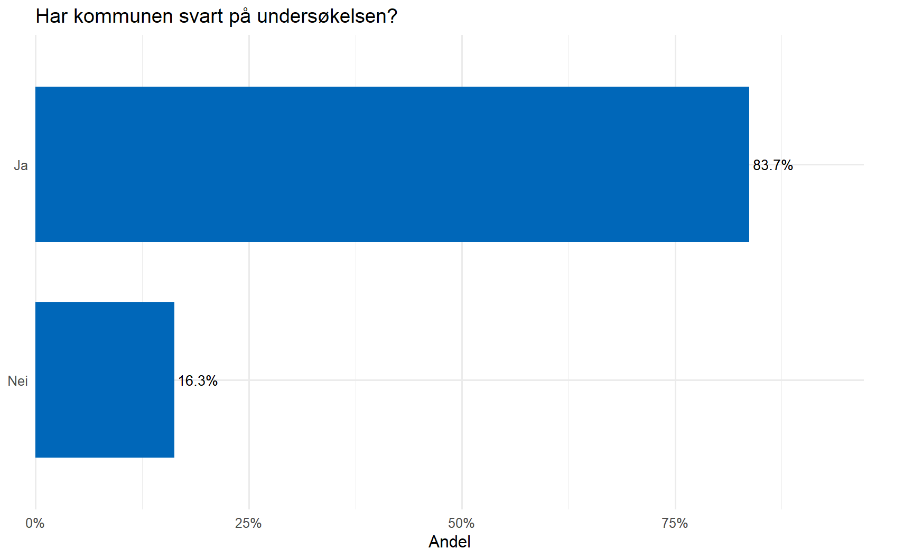
|Svar | n| Prosent|
|:----|--:|-------:|
|Ja | 36| 83.7 %|
|Nei | 7| 16.3 %|
*Grunnlag: n = 43 gyldige svar.*3 Om respondentene
3.0.1 Organisatorisk plassering av den som har fylt ut skjemaet
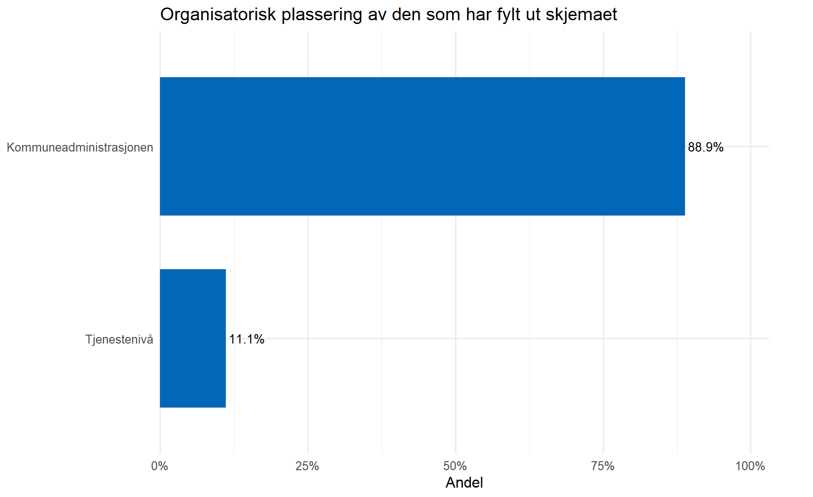
| Svar | n | Prosent |
|---|---|---|
| Kommuneadministrasjonen | 32 | 88.9 % |
| Tjenestenivå | 4 | 11.1 % |
Grunnlag: n = 36 gyldige svar.
3.0.2 Tittel
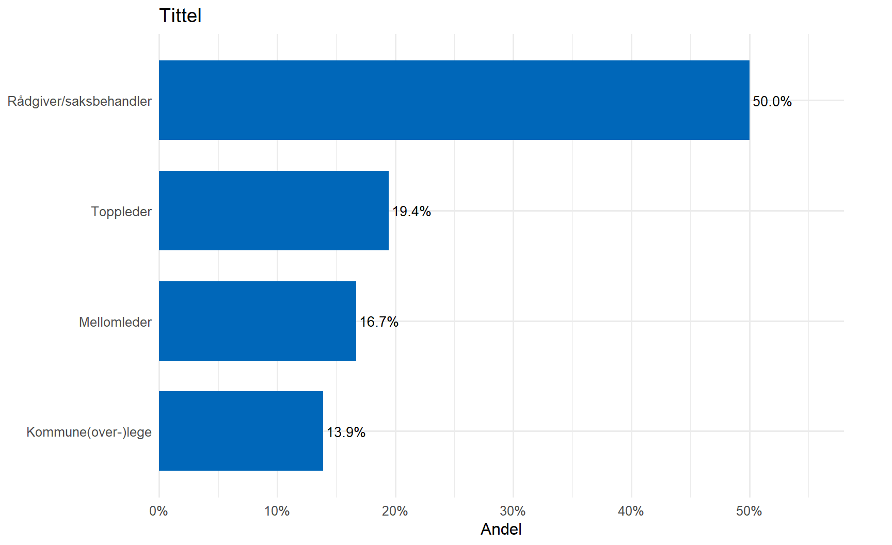
| Svar | n | Prosent |
|---|---|---|
| Rådgiver/saksbehandler | 18 | 50.0 % |
| Toppleder | 7 | 19.4 % |
| Mellomleder | 6 | 16.7 % |
| Kommune(over-)lege | 5 | 13.9 % |
Grunnlag: n = 36 gyldige svar.
3.0.3 Sektortilknytning
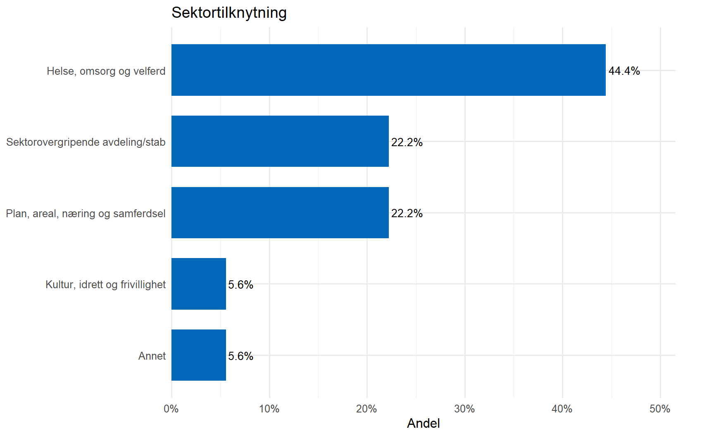
| Svar | n | Prosent |
|---|---|---|
| Helse, omsorg og velferd | 16 | 44.4 % |
| Plan, areal, næring og samferdsel | 8 | 22.2 % |
| Sektorovergripende avdeling/stab | 8 | 22.2 % |
| Annet | 2 | 5.6 % |
| Kultur, idrett og frivillighet | 2 | 5.6 % |
Grunnlag: n = 36 gyldige svar. # Ivaretar kommunen kravet til oversikt over helsetilstanden i kommunen og faktorer som påvirker denne?
3.0.4 1a. Ivaretar kommunen kravet til oversikt over helsetilstanden i kommunen og faktorer som påvirker denne?
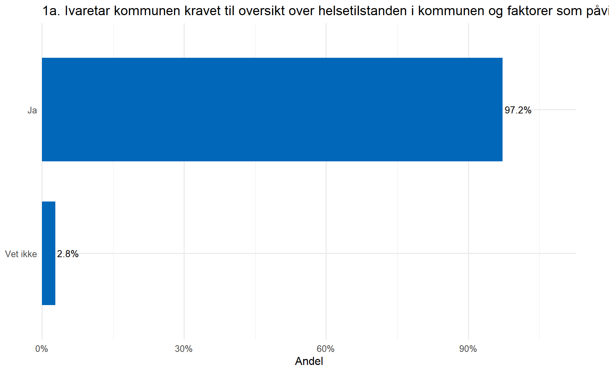
| Svar | n | Prosent |
|---|---|---|
| Ja | 35 | 97.2 % |
| Vet ikke | 1 | 2.8 % |
Grunnlag: n = 36 gyldige svar.
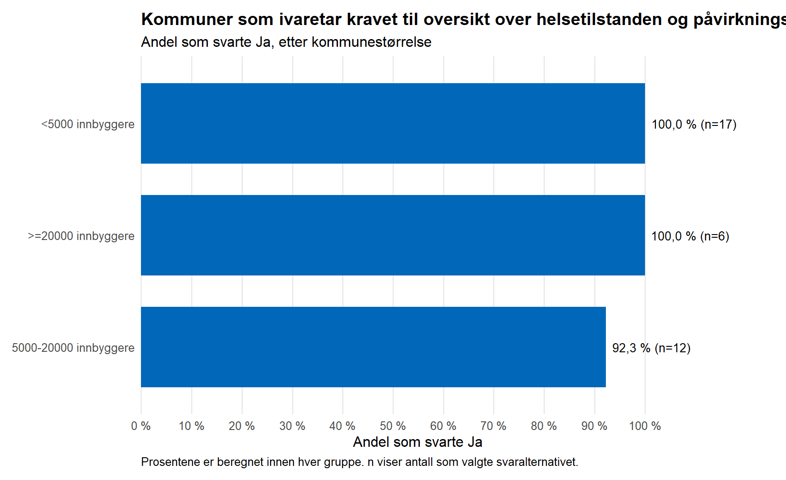
| liten | Svar | Antall kommuner | Prosent | Gyldige svar i gruppen |
|---|---|---|---|---|
| <5000 innbyggere | Ja | 17 | 100,0 % | 17 |
| <5000 innbyggere | Nei | 0 | 0,0 % | 17 |
| <5000 innbyggere | Vet ikke | 0 | 0,0 % | 17 |
| >=20000 innbyggere | Ja | 6 | 100,0 % | 6 |
| >=20000 innbyggere | Nei | 0 | 0,0 % | 6 |
| >=20000 innbyggere | Vet ikke | 0 | 0,0 % | 6 |
| 5000-20000 innbyggere | Ja | 12 | 92,3 % | 13 |
| 5000-20000 innbyggere | Nei | 0 | 0,0 % | 13 |
| 5000-20000 innbyggere | Vet ikke | 1 | 7,7 % | 13 |
4 Oversikt over helsetilstand og påvirkningsfaktorer
Warning in single_table(v = "q16", labels = q16_labels): Ukjente koder i q16:
2023, 2024, 2025, 2026, 2022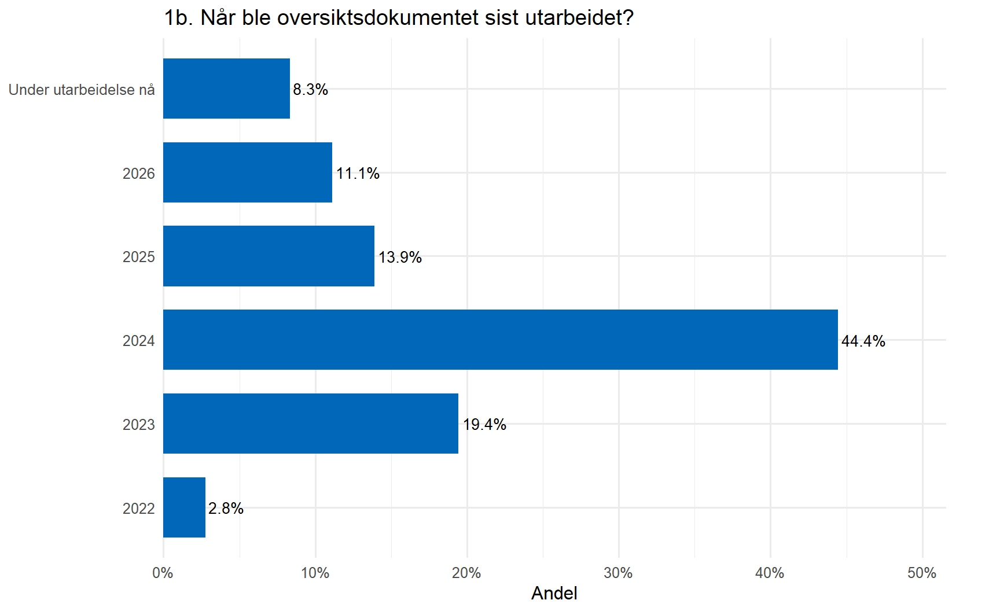
| Svar | n | Prosent |
|---|---|---|
| Under utarbeidelse nå | 3 | 8.3 % |
| 2026 | 4 | 11.1 % |
| 2025 | 5 | 13.9 % |
| 2024 | 16 | 44.4 % |
| 2023 | 7 | 19.4 % |
| 2022 | 1 | 2.8 % |
4.1 Deler av kommunen som er involvert
Bare kommuner med svaralternativ 1 til 9 på spørsmål 1b inngår.
Registered S3 method overwritten by 'quantmod':
method from
as.zoo.data.frame zoo | Del av kommunen | Antall kommuner |
|---|---|
| Helse og omsorg | 30 |
| Samfunnsmedisinsk | 30 |
| Samfunn-/byutvikling | 27 |
| Kultur og frivillighet | 26 |
| Utdanning | 25 |
| Barnehage | 21 |
| Velferd, arbeid og integrering | 19 |
| Plan og bygning | 17 |
| Miljø og klima | 14 |
| Eiendom | 9 |
| Miljøteknisk | 9 |
| Annet | 8 |
| Næring | 7 |
5 Interkommunalt samarbeid
5.0.1 3a. Samarbeider kommunen med andre kommuner?
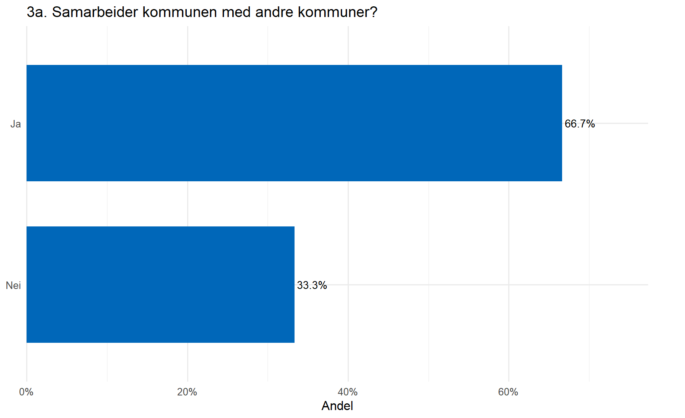
| Svar | n | Prosent |
|---|---|---|
| Ja | 24 | 66.7 % |
| Nei | 12 | 33.3 % |
Grunnlag: n = 36 gyldige svar.
| Samarbeider om | Antall kommuner |
|---|---|
| Folkehelsearbeid | 15 |
| Tilsyn | 16 |
| Beredskap | 10 |
| Kommuneoverlegefunksjonen | 10 |
| Samarbeidsområder (antall) | Antall kommuner |
|---|---|
| 1 | 8 |
| 2 | 7 |
| 3 | 7 |
| 4 | 2 |
5.1 Samarbeid etter kommunestørrelse og fylke
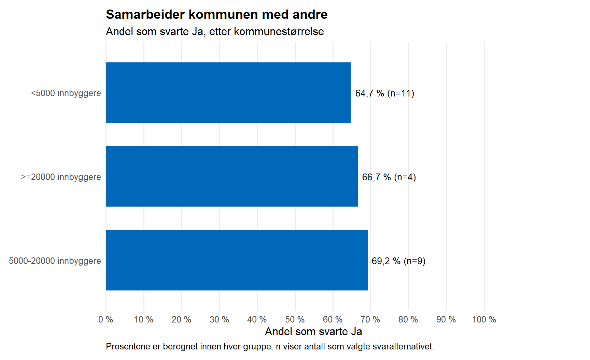
| liten | Svar | Antall kommuner | Prosent | Gyldige svar i gruppen |
|---|---|---|---|---|
| <5000 innbyggere | Ja | 11 | 64,7 % | 17 |
| <5000 innbyggere | Nei | 6 | 35,3 % | 17 |
| >=20000 innbyggere | Ja | 4 | 66,7 % | 6 |
| >=20000 innbyggere | Nei | 2 | 33,3 % | 6 |
| 5000-20000 innbyggere | Ja | 9 | 69,2 % | 13 |
| 5000-20000 innbyggere | Nei | 4 | 30,8 % | 13 |
6 Største folkehelseutfordringer og prioriterte tiltak
| Hovedutfordringer | Antall kommuner |
|---|---|
| Aldring av befolkningen | 24 |
| Psykisk helse og livskvalitet | 21 |
| Befolkningssammensetning | 16 |
| Fysisk aktivitet | 12 |
| Sosial ulikhet i helse | 11 |
| Utenforskap/ensomhet | 11 |
| Sosioøkonomiske forskjeller | 9 |
| Bolig | 8 |
| Ernæring/kosthold | 7 |
| Skole/utdanning | 7 |
| Tilknytning til arbeidsliv | 7 |
| Fysisk helse | 4 |
| Klima og miljø | 3 |
| Levekår | 3 |
| Rusmiddelbruk | 3 |
| Andre tema | 2 |
| Ikke identifisert eller ikke prioritert tiltak | 2 |
| Sosial støtte/deltagelse/mestring | 2 |
| Barnehage | 1 |
| Fritidstilbud | 1 |
| Opphoping av levekårsutfordringer | 1 |
| Nærmiljø | 0 |
| Skader | 0 |
| Tobakksbruk | 0 |
| Ulykker | 0 |
| Prioriterte tiltak | Antall kommuner |
|---|---|
| Psykisk helse og livskvalitet | 23 |
| Aldring av befolkningen | 17 |
| Utenforskap/ensomhet | 11 |
| Fritidstilbud | 10 |
| Befolkningssammensetning | 9 |
| Fysisk aktivitet | 9 |
| Skole/utdanning | 9 |
| Sosial støtte/deltagelse/mestring | 8 |
| Sosial ulikhet i helse | 7 |
| Bolig | 5 |
| Ernæring/kosthold | 5 |
| Sosioøkonomiske forskjeller | 4 |
| Ikke identifisert eller ikke prioritert tiltak | 3 |
| Rusmiddelbruk | 3 |
| Tilknytning til arbeidsliv | 3 |
| Barnehage | 2 |
| Fysisk helse | 2 |
| Klima og miljø | 2 |
| Levekår | 2 |
| Nærmiljø | 2 |
| Opphoping av levekårsutfordringer | 1 |
| Ulykker | 1 |
| Andre tema | 0 |
| Skader | 0 |
| Tobakksbruk | 0 |
7 Planstrategi og planer
7.0.1 5. Er hovedutfordringene drøftet i kommunal planstrategi?
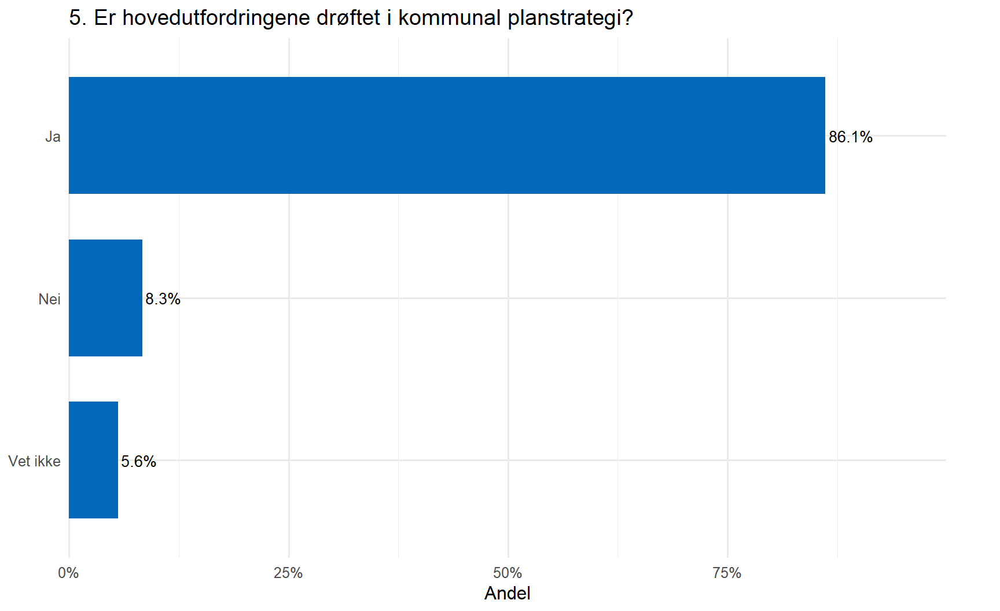
| Svar | n | Prosent |
|---|---|---|
| Ja | 31 | 86.1 % |
| Nei | 3 | 8.3 % |
| Vet ikke | 2 | 5.6 % |
Grunnlag: n = 36 gyldige svar.
7.0.2 6. Har utfordringene påvirket prioritering eller utarbeiding av planer?
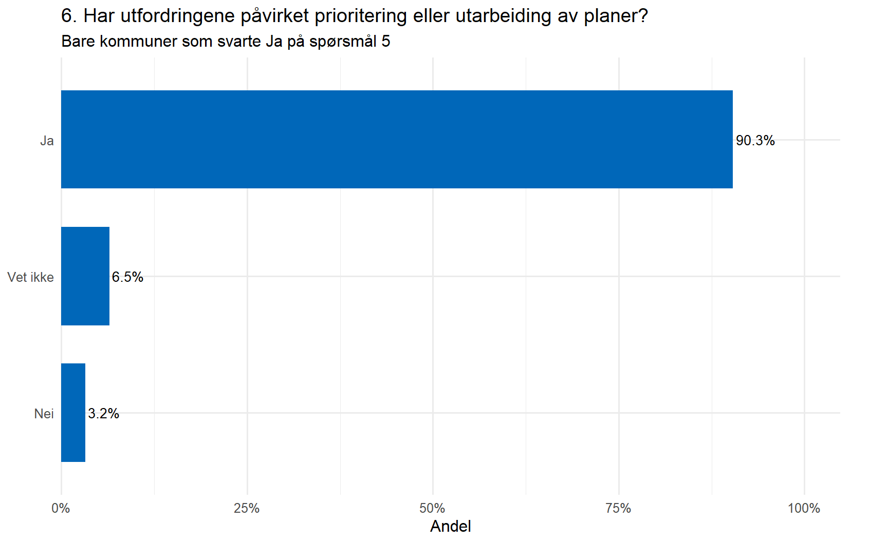
| Svar | n | Prosent |
|---|---|---|
| Ja | 28 | 90.3 % |
| Vet ikke | 2 | 6.5 % |
| Nei | 1 | 3.2 % |
Grunnlag: n = 31 gyldige svar.
7.1 Er hovedutfordringene drøftet i kommunal planstrategi? Etter landsdel og kommunestørrelse
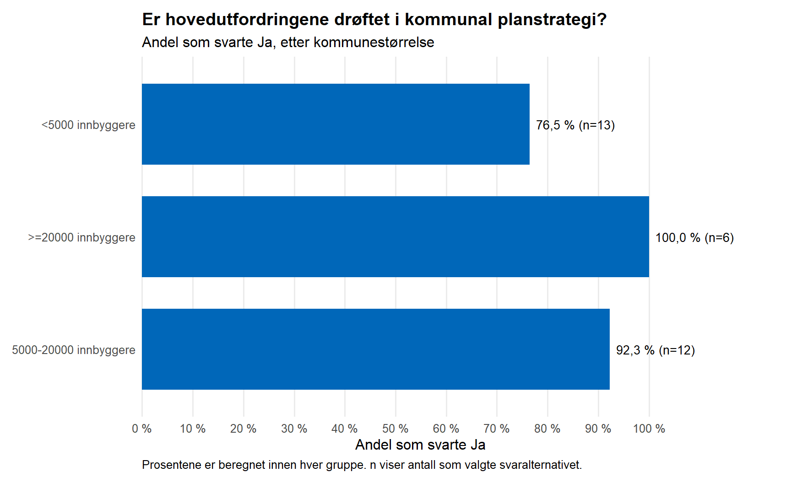
| liten | Svar | Antall kommuner | Prosent | Gyldige svar i gruppen |
|---|---|---|---|---|
| <5000 innbyggere | Ja | 13 | 76,5 % | 17 |
| <5000 innbyggere | Nei | 2 | 11,8 % | 17 |
| <5000 innbyggere | Vet ikke | 2 | 11,8 % | 17 |
| >=20000 innbyggere | Ja | 6 | 100,0 % | 6 |
| >=20000 innbyggere | Nei | 0 | 0,0 % | 6 |
| >=20000 innbyggere | Vet ikke | 0 | 0,0 % | 6 |
| 5000-20000 innbyggere | Ja | 12 | 92,3 % | 13 |
| 5000-20000 innbyggere | Nei | 1 | 7,7 % | 13 |
| 5000-20000 innbyggere | Vet ikke | 0 | 0,0 % | 13 |
7.2 Planer hvor kommunen har fastsatt mål og strategier som svar på folkehelseutfordringene
| Plan / strategi | Antall kommuner |
|---|---|
| Kommuneplanens samfunnsdel | 32 |
| Planer for oppvekst | 18 |
| Planer innen helse/sosial | 18 |
| Planer for kultur | 15 |
| Forebyggende plan i barnevernsloven | 12 |
| Økonomiplan/handlingsprogram | 11 |
| Planer for frivillighet | 10 |
| Alkoholpolitisk handlingsplan | 8 |
| Kommuneplanens arealdel | 8 |
| Egen plan for folkehelse | 4 |
| Planer for utdanning | 4 |
| Andre temaområder | 2 |
| Planer for by-/nærmiljø-/arealutvikling | 2 |
| Ingen av disse | 1 |
| Planer for miljø og klima | 1 |
| Planer for næringsutvikling | 0 |
8 Samiske folkehelseutfordringer
8.0.1 7a. Oppmerksomhet på særskilte folkehelseutfordringer i den samiske befolkningen
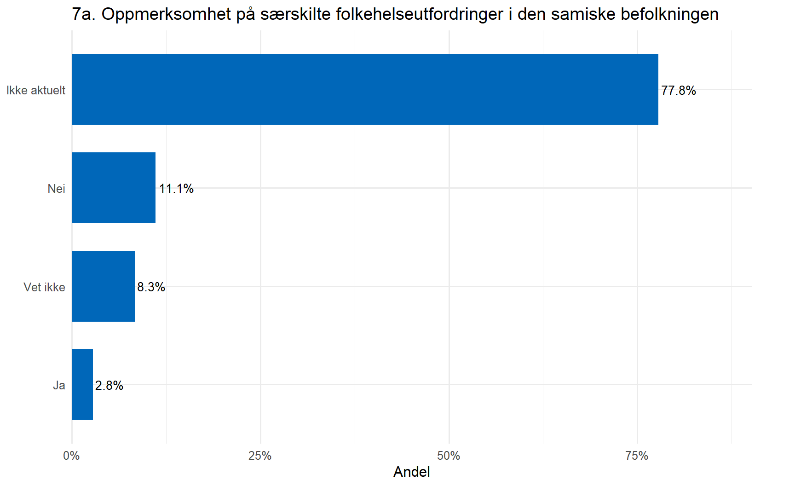
| Svar | n | Prosent |
|---|---|---|
| Ikke aktuelt | 28 | 77.8 % |
| Nei | 4 | 11.1 % |
| Vet ikke | 3 | 8.3 % |
| Ja | 1 | 2.8 % |
Grunnlag: n = 36 gyldige svar.
character(0)
Antall utfylte fritekstsvar blant kommuner i filteret: 1.
Rå fritekst bør ikke publiseres ukritisk. Konkrete beskrivelser kan identifisere kommune eller enkeltperson.
9 Evaluering, læring og forbedring
9.0.1 9a. Har kommunen gjennomgått og vurdert folkehelsearbeidet i fireårsperioden?
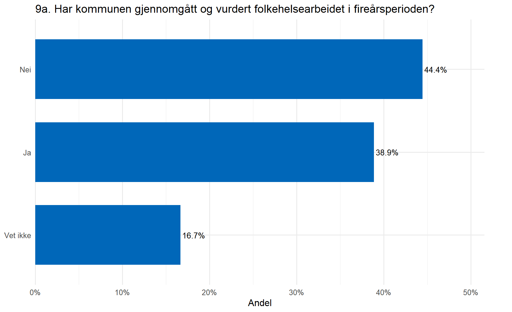
| Svar | n | Prosent |
|---|---|---|
| Nei | 16 | 44.4 % |
| Ja | 14 | 38.9 % |
| Vet ikke | 6 | 16.7 % |
Grunnlag: n = 36 gyldige svar.
| Fritekst | Variabel | n |
|---|---|---|
| 9b. Forbedringsområder | q21b | 12 |
| 9c. Bruk av erfaringer i neste fireårssyklus | q21b_1 | 10 |
Fritekstsvar bør kodes tematisk i en separat, dokumentert analyse. Rapportér temaer med antall kommuner og anonymiser eventuelle sitater.
9.1 Etter landsdel og kommunestørrelse
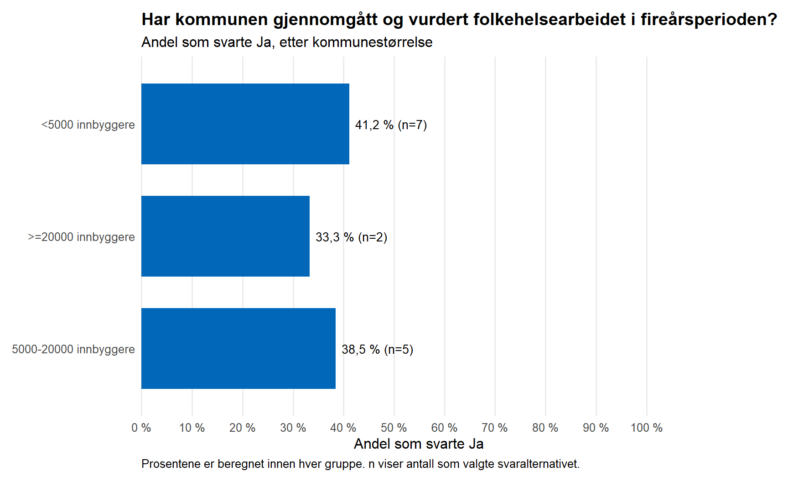
| liten | Svar | Antall kommuner | Prosent | Gyldige svar i gruppen |
|---|---|---|---|---|
| <5000 innbyggere | Ja | 7 | 41,2 % | 17 |
| <5000 innbyggere | Nei | 7 | 41,2 % | 17 |
| <5000 innbyggere | Vet ikke | 3 | 17,6 % | 17 |
| >=20000 innbyggere | Ja | 2 | 33,3 % | 6 |
| >=20000 innbyggere | Nei | 3 | 50,0 % | 6 |
| >=20000 innbyggere | Vet ikke | 1 | 16,7 % | 6 |
| 5000-20000 innbyggere | Ja | 5 | 38,5 % | 13 |
| 5000-20000 innbyggere | Nei | 6 | 46,2 % | 13 |
| 5000-20000 innbyggere | Vet ikke | 2 | 15,4 % | 13 |
10 Barrierer og utfordringer
| Barriere/utfordring | Antall kommuner |
|---|---|
| Kapasitet og personellressurser | 26 |
| Organisering og samordning | 22 |
| Forankring | 11 |
| Prioritering fra ledelsen | 10 |
| Kompetanse | 5 |
| Annet | 4 |
| barrierer systematisk folkehelsearbeid (antall) | Antall kommuner |
|---|---|
| 1 | 12 |
| 2 | 12 |
| 3 | 8 |
| 4 | 2 |
| 5 | 2 |
| Barriere/utfordring | Antall kommuner |
|---|---|
| Kapasitet og personellressurser | 23 |
| Organisering og samordning | 20 |
| Forankring | 11 |
| Kompetanse | 8 |
| Prioritering fra ledelsen | 8 |
| Annet | 4 |
| barrierer jobbe kunnskapsbasert og langsiktig (antall) | Antall kommuner |
|---|---|
| 1 | 15 |
| 2 | 11 |
| 3 | 6 |
| 4 | 1 |
| 5 | 3 |
Undergruppeforskjeller er deskriptive og bør ikke tolkes kausalt. Små grupper gir stor tilfeldig usikkerhet.
11 Datakvalitet og kontroll
|Kontroll | Antall|
|:---------------------|------:|
|duplikate_kommuner | 0|
|ugyldig_kommunenummer | 0|
|mangler_fylke | 0|
|mangler_landsdel | 0|
|mangler_folketall | 0|11.1 Filterkontroller
|Kontroll | Antall|
|:------------------------------------------|------:|
|Spørsmål 2 besvart uten gyldig svar på 1b | 0|
|Spørsmål 3b besvart uten Ja på 3a | 0|
|Spørsmål 6 besvart uten Ja på 5 | 0|
|Spørsmål 7b besvart uten Ja på 7a | 0|
|Spørsmål 9b eller 9c besvart uten Ja på 9a | 0|